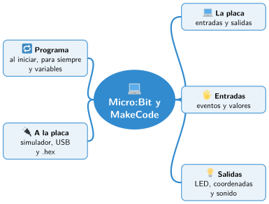

Bloque II · Programación
UD06 Programar placas con MakeCode
Sesiones
- Sesión 6.1 La placa Micro:Bit y el editor MakeCode
- Sesión 6.2 Entradas: botones, acelerómetro y sensores de luz y temperatura
- Sesión 6.3 Salidas: matriz de LED y sonido
- Sesión 6.4 Eventos, variables y bucles en una placa
- Sesión 6.5 El simulador y la descarga del programa a la placa
Al terminar la unidad
- 🛠️ Práctica con las herramientas
- 📝 Repaso de la unidad
- ✅ Autoevaluación
- 🎯 Situaciones de aprendizaje del bloque
Mapa mental de la unidad

✏️ Repasa la unidad con el mapa: tapa una rama y explica en voz alta lo que pone.